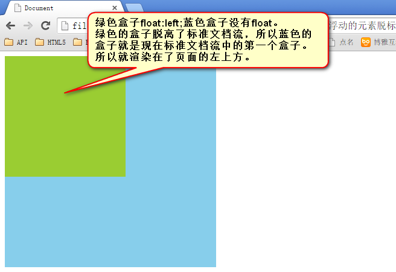
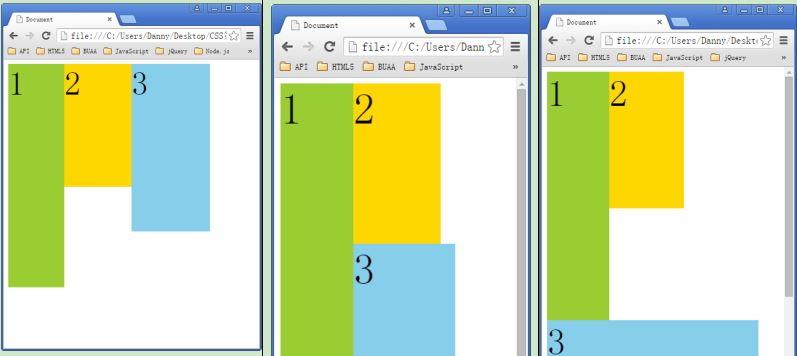
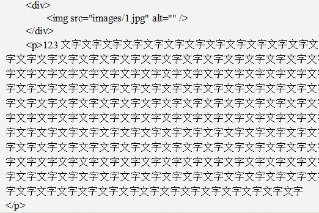
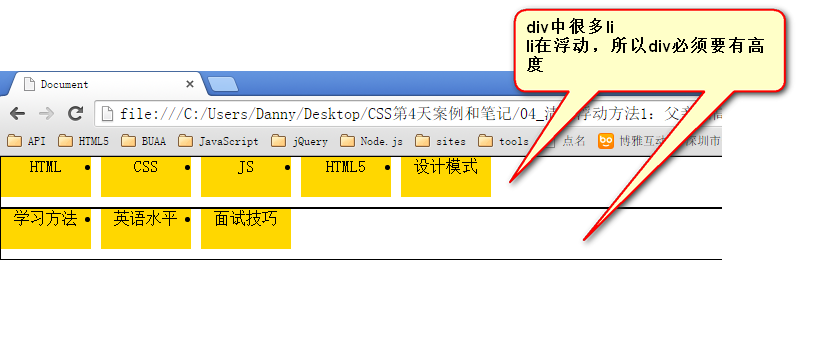
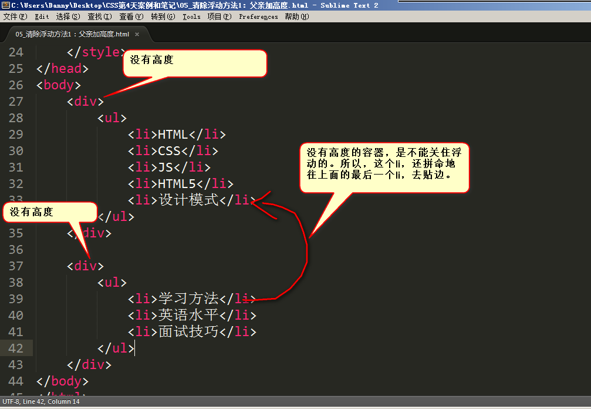
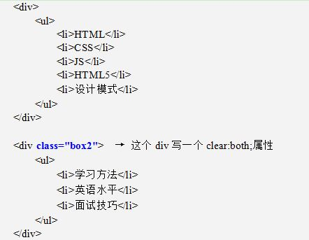
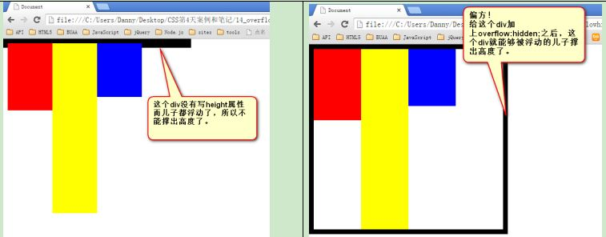

石婉茹
我的名字：石婉茹
QQ:2829339528
wechat:ww28052
敢问路在何方&&路在脚下
95后/本科在读/轻生活/轻梦想
石婉茹
我的名字：石婉茹
QQ:2829339528
wechat:ww28052
敢问路在何方&&路在脚下
95后/本科在读/轻生活/轻梦想
证明1：
证明2：
一个浮动span标签不需要转成块级元素，就能够设置宽度、高度了。
所有标签已经不区分行内、块了。也就是说，一旦一个元素浮动了，将能够并排了，并且能够设置宽高了。无论它原来是个div还是个span。
如果有足够空间，那么就会靠着2号。如果没有足够的空间，那么会靠着1号。如果没有足够的空间靠着1号，自己去贴左墙。
让div浮动，p不浮动，div挡住了p，但是p中的文字不会被挡住，形成“字围”效果。
一个浮动的元素，如果没有设置width，那么将自动收缩为文字的宽度，由内容撑宽
本以为这些li，会分为两排，但是，第二组中的第1个li，去贴靠第一组中的最后一个li了
第二个div中的li，去贴第一个div中最后一个li的边了。因为div没有高度，不能给自己浮动的孩子们，一个容器。
如果一个元素要浮动，那么它的祖先元素一定要有高度。高度的盒子，才能关住浮动。
 只要浮动在一个有高度的盒子中，那么这个浮动就不会影响后面的浮动元素。所以就是清除浮动带来的影响了。
网页制作中，高度height很少出现,因为能被内容撑高！
clear:both指左浮动、右浮动都要清除，清除别人的影响。这种方法有一个非常大的、致命的问题，margin失效了
overflow:hidden; 溢出盒子边框的内容，隐藏了。即本意就是清除溢出到盒子外面的文字。但是，前端开发工程师又发现了，它能做偏方。
一个父亲不能被自己浮动的儿子，撑出高度。但是，只要给父亲加上overflow:hidden; 那么，父亲就能被儿子撑出高了。这是一个偏方。
浮动的元素，只能被有高度的盒子关住。 也就是说，如果盒子内部有浮动，这个盒子有高，那么妥妥的，浮动不会互相影响。但是，工作上，我们绝对不会给所有的盒子加高度，这是因为麻烦，并且不能适应页面的快速变化。
最简单的清除浮动的方法，就是给盒子增加clear:both；表示自己的内部元素，不受其他盒子的影响。
浮动确实被清除了，不会互相影响了。但是有一个问题，就是margin失效。两个div之间，没有任何的间隙了。
在两部分浮动元素中间，建一个墙。隔开两部分浮动，让后面的浮动元素，不去追前面的浮动元素。墙用自己的身体当做了间隙。
隔墙法好用，但是第一个div，还是没有高度。如果我们现在想让第一个div，自动的根据自己的儿子，撑出高度，我们就要想一些“小伎俩”，“奇淫技巧”，内墙法
内墙法的优点就是，不仅仅能够让后部分的p不去追前部分的p了，并且能把第一个div撑出高度。这样，这个div的背景、边框就能够根据p的高度来撑开了。
这个属性的本意，就是将所有溢出盒子的内容，隐藏掉。但是，我们发现这个东西能够用于浮动的清除。
我们知道，一个父亲，不能被自己浮动的儿子撑出高度，但是，如果这个父亲加上了overflow:hidden；那么这个父亲就能够被浮动的儿子撑出高度了。这个现象，不能解释，就是浏览器的小偏方。
overflow:hidden;能够让margin生效